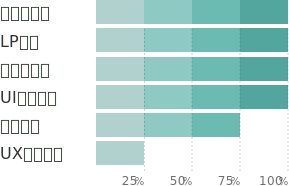
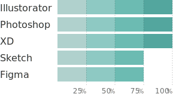
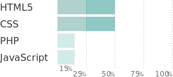
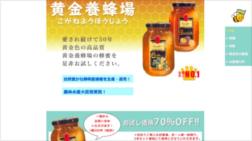
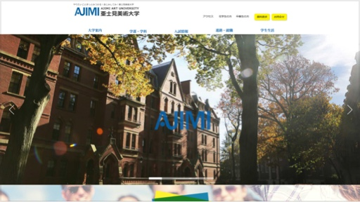
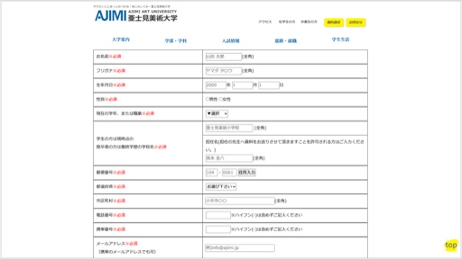
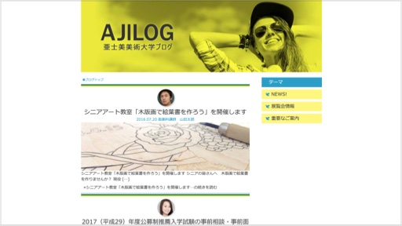
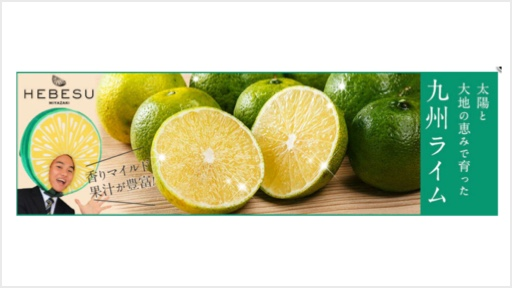
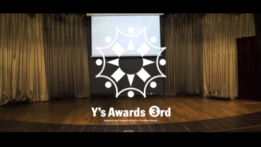

About自己紹介
初めまして。UI／Webデザイナーの山口真希です。私はデザインをするとき、「見やすさ」、「伝わりやすさ」、「使いやすさ」を考えて作っています。そして、「使う人に使い方をゆだねられるもの」を目指して作っています。その形と形が横同士でも成立し、縦に並んでも成立する。その順番が逆になっても成立する。積木みたいに、選択肢がいくつも広がって、手に取っってくれた人によって、いろんな組み合わせがある。そんな可能性のあるデザインが作れるように頑張っています。
Skillスキル
スキルのレベルについて棒グラフで示しています。
棒グラフについて
- 15%
- スクールで学習済み
- 25%
- 実務で触れ始め独学で学んでいる
- 50%
- 実務で１年以上だが、今は就いていない
- 75%
- 実務で2年未満
- 100%
- 実務で3年以上
-
デザイン
 -
ツール
 -
言語
 -
制作環境
Windows10/MacBookPro
Portforio作品
受託案件や客先常駐として携わらせていただくことが多かったため、自身で練習用に作成したオリジナルサイトのみを掲載させていただいております。「お問い合わせボタン」よりお問い合わせいただいた際に、制作実績をお送りさせていただきます。
-
 - デザイン
- HTML
- CSS
- JQuery
黄金養蜂場
- 期間：2ヶ月半（2016年12月〜）
- ページ数：2ページ
JQueryを使用し動きのあるサイト作りをしました。フォームの作成や、一部SEO対策もしています。
-
 - デザイン
- HTML
- CSS
- JQuery
亜士見美術大学
- 期間：3ヶ月半（2016年6月〜）
- ページ数：5ページ
各ページのコーディングに加え、トップページにパララックスを導入し視覚的に楽しんでもらう仕様にしました。
-
 - デザイン
- HTML
- CSS
- JQuery
- PHP
お問い合わせフォーム作成
- 期間：3ヶ月半（2016年9月〜）
- ページ数：1ページ
スクールで学んだPHPとJavaScriptを使用し、一からお問い合わせフォームを作成しました。PHP側でバリデーションを行い、実際に送信もできます。
-
 - デザイン
- HTML
- CSS
- PHP
WordPress実装
- 期間：2ヶ月半（2016年12月〜）
- ページ数：2ページ
WordPressを設置し、記事ページを作成しました。メインループとサブループで投稿記事を表示しています。
-
 - デザイン
バナー作成
- 期間：2日（217年6月）
Crowdworksにてバナー作成のお仕事をさせていただきました。フレッシュに仕上がるよう色彩構成を考えました。
-
 - デザイン
社内アワードロゴ作成
- 期間：2週間（2020年9月）
社内のアワードでロゴを採用していただきました。アワード内で使用された動画や表彰状に使っていただきました。
Contactお問い合わせ
受託案件や客先常駐として携わらせていただくことが多かったため、自身で練習用に作成したオリジナルサイトのみを掲載させていただいております。「お問い合わせボタン」よりお問い合わせいただいた際に、制作実績をお送りさせていただきます。
お問い合わせ